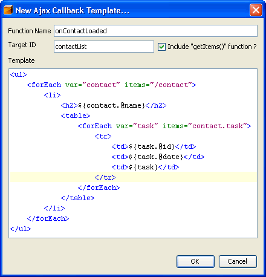

The goal of this project is to provide JavaScript support to NetBeans IDE 5.0.
Sources and binairies are released under the SPL license.
To write an AJAX callback that render complex HTML from a complex XML document can be a difficult and frustating task, you have to do a lot of String concatenation and escaping. You also have to read the "responseXML" DOM with a lot of repetitive use of getElementsByTagName(), firstChild, childNodes, etc...
This problem doesn't exists anymore with the NetBeans JavaScript Editor! It provide a feature that convert a HTML template into JavaScript code. However, you have to learn a very simple template language for the dynamic part.
The dynamic part is very limited but it can be used in a lot of the case.
The syntax for a variable output is the following : ${expression}
The expression begin with a slash of a variable identifier defined in a forEach loop. The slash '/' is a reference to the root element in the XML document. You don't have to specify the node name of the root element in the expression. If you only output a reference to a node(with a slash or a variable identifier), it will output his first text node.
Once you obtained a reference(with a slash or a variable identifier), you can output both attributes and child nodes :
| Expression | Description |
|---|---|
| ${/@title} | This expression will output the "title" attribute of the root element. |
| ${/title} | This expression will output the text node of the "title" child of the root element. |
| ${/title.@cssClass} | This expression will output the "cssClass" attribute of the "title" child of the root element. |
| ${account.contact.@firstName} | This expression will output the "firstName" attribute of the "contact" child of the "account" variable declared in a forEach loop. |
| ${account.contact.description} | This expression will output the text node of the "description" child of the "contact" child of the "account" variable declared in a forEach loop. |
You can iterate on a NodeList with a forEach loop
The syntax for is the following :
<forEach var="account" items="/account.contact">
LOOP CONTENT
</forEach>
The variable identifier in the "var" attribute is can used by a variable output or by a nested loop.
The syntax for the "items" attribute is similar to the variable output syntax but with some differences. The '@' is not used since it's impossible to iterate over an attribute. You can use a double slash (//) for a recursive lookup in the document. You can use a double dot (..) for a recursive lookup on a specified node. If you use a single dot, the NodeList returned will only contains children of the first level of the node.
| Expression | Description |
|---|---|
| /contact | Return a NodeList that contains all "contact" children of the root element. |
| contact.task | Return a NodeList that contains all "task" children of the contact variable. |
| contact..task | Return a NodeList that contains all "task" children contact variable regarless of the node level. |
| //task | Return a NodeList that contains all "task" element in the document. |
Here is an exemple of what a template look like :
This JavaScript editor has been developped on the NetBeans Platform 5.0. The development is for short terms and there is nothing planned for the future since NetBeans IDE will provide JavaScript support in future version.
Visit my blog(FR) for more technical infos, or me by email.(Nicolas Désy)